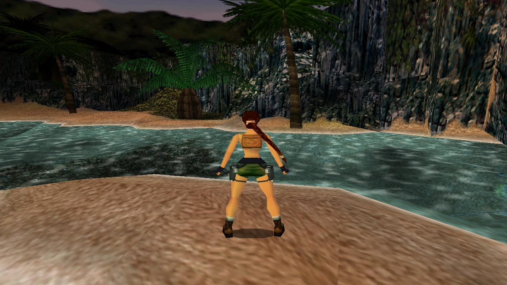
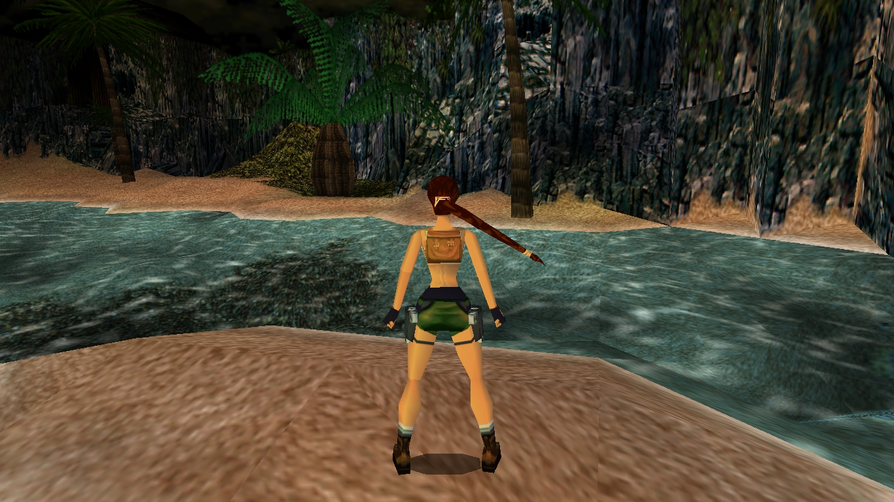

Мой патч на Raiding The Globe — официальный фан-сайт по серии Tomb Raider
Мой патч на вики-сайте PCGamingWiki
Вид компьютерной игры Tomb Raider 2 - 3 - 4 на широкоформатном мониторе ДО применения широкоформатного патча - искажение пропорций изображения. Использовалось разрешение 1366x768 без широкоформатного исправления
Вид компьютерной игры Tomb Raider 2 - 3 - 4 на широкоформатном мониторе ПОСЛЕ применения широкоформатного патча - без искажений пропорций изображения. Разрешение игры после применения широкоформатного патча 1366x768
В данном разделе можно загрузить MS-DOS загрузочный сектор, исходный код NASM, загрузочный сектор для флоппи диска. Исходный код загрузочного сектора можно откомилировать при помощи NASM, затем создать образ флоппи дискеты, добавить загрузочный сектор в этот образ флоппи дисекты, и загрузить образ флоппи дискеты в программе Virtual Box (или любом другом эмуляторе).
В данном разделе можно загрузить широкоэкранный патч Old Games Widescreen Patch для компьютерной игры Need For Speed Hot Pursuit 2 и широкоэкранный патч Tomb Raider widescreen patch (расширенная версия Old Games Widescreen Patch) для Tomb Raider 2 - 3 - 4 - 5. Эти игры были созданы в 1996- 2002 гг. для дисплеев с пропорциями экрана 4x3, до того как появились широкоэкранные дисплеи 16x9, 16x10 и другие. Мой патч позволяет запускать игры Tomb Raider 2 - 3 - 4 - 5 и Need For Speed Hot Pursuit 2 на любых современных широкоформатных дисплеях и пропорциях экрана 16х9, 16x10 и др. без искажений соотношения сторон игрового экрана. Так же возможно загрузить шикороэкранные патчи для игр Need For Speed Most Wanted и Need For Speed Underground 1 - 2.
Tomb Raider 1 source code, без DirectX/OpenGL, проект software rendering.
Протестировано под Windows 10. Скомпилировано в Visual Studio 2019.
Код находится в состоянии разработки, но играть уже можно. Поместите файлы уровней в папку DATA. См. Файл winmain.cpp для настроек.
Особенности:
Описание внутреннего устройства игры Tomb Raider 1 ЧИТАТЬ
Загрузить исходный код игры Tomb Raider 1 ЗАГРУЗИТЬ
Страница проекта Tomb Raider 1 на GitHub https://github.com/ed-kurlyak/TOMBRAID
Аннотация.
Данная серия глав излагает основные принципы трехмерной графики. Перед тем как браться изучать DirectX или OpenGL, лучше всего освоить основы, создав собственный конвеер рендеринга- чем мы и будем заниматся. На математических принципах, поданых в изложении, построены такие API как DirectX и OpenGL. Данная серия глав излагает закулисные механизмы DirectX и OpenGL. Если вы освоите основные математические принциы, излагаемые ниже, вы сможете освоить любое графическое API. Для изучения данного ниже материала необходимо иметь базовые знания о вектроной и матричной математике и знание языка программирования С++. Изложение предназначено не для новичков в программировании, а людей которые знакомы с программированием DirectX и OpenGL и трехмерной математикой. Например в данном изложении не объясняется что такое скалярное произведение векторов- просто подается код на С++ который выполняет скалярное произведение векторов, а что это такое- скалярное произведение векторов- читатель должен быть с этим знаком сам.
Загрузить архив с примерами ЗДЕСЬ.
Содержание Раздел 1
Содержание Раздел 2
Содержание Раздел 3
Содержание Раздел 4